Physical AI 2026 基礎編 ／ 第6回 演習の要点
同じ方策（ACT）、同じ学習規模（200k step）、同じタスク。変えたのはデータだけ。 それでも成功率は 22% と 88% に割れた。この資料は、その差がどこで生まれたのかと、 自分のデータで同じ差を作らないための手順をまとめたものです。
出典：Physical AI 2026 基礎編 知能ロボティクス講座 2026 Spring 第6回 演習（松尾・岩澤研究室）の録画より。
数値・図はすべて講義中に提示された実測値のスクリーンショットです。
3条件の実測。観測と行動のペアが 350 ms ずれているだけで、成功率は 0.88 → 0.22 まで落ちる。 にもかかわらず、下の学習曲線では dirty 条件も普通に収束している。 「学習が回ること」と「ロボットが動くこと」は別物、という結論がこの1枚に出ています。
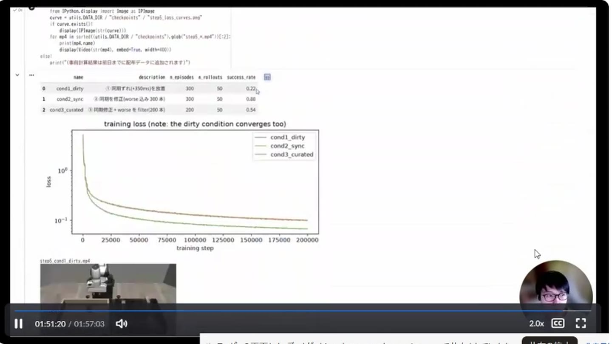
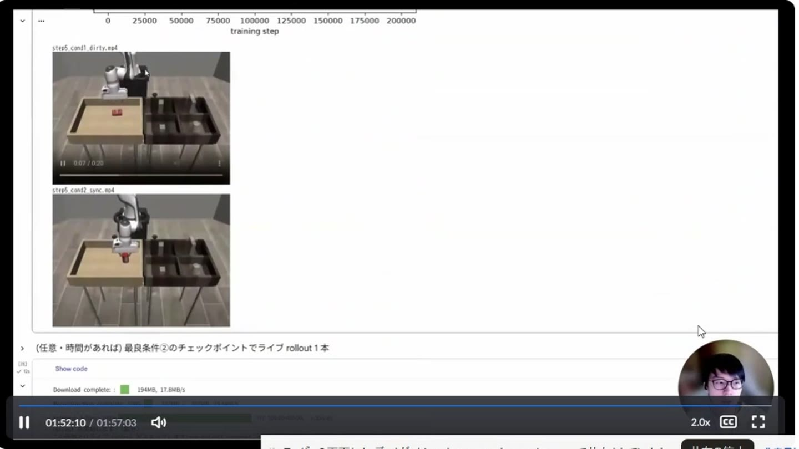
ずれ幅だけを 0 / 100 / 200 ms と変えて学習した講師の実測（各100 rollouts）。 100 ms は約6pt 低下＝誤差の範囲、200 ms で約24pt 低下＝はっきり有意。 つまり数十 ms の遅れは許容できるが、100 ms を超えたあたりから方策が壊れ始めます。
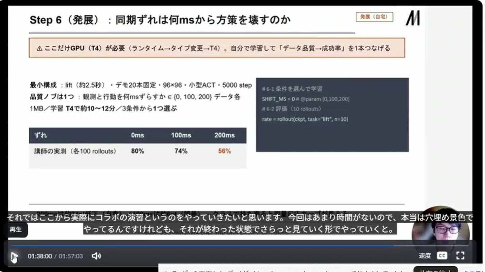
| 観測と行動のずれ | 成功率（100 rollouts） | 判定 |
|---|---|---|
| 0 ms | 80% | 基準 |
| 100 ms | 74% | 約6pt低下 ＝ 誤差の範囲 |
| 200 ms | 56% | 約24pt低下 ＝ 有意 |
| 350 ms（別実験） | 22% | ほぼ機能しない |
講義全体の主張がこの1枚。データスケールとは収録時間を増やすことではなく、単位コスト当たりに 「同期され・多様で・正しくラベル付けされ・検証可能な軌道」をどれだけ作れるか。 今日の演習は、その5工程を1周する構成でした。
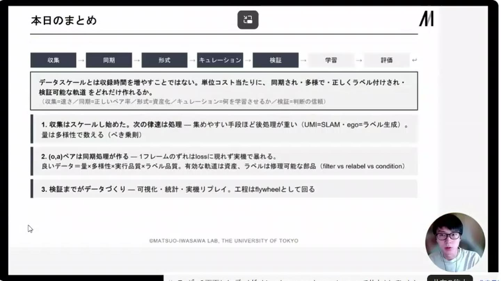
トピックごとに median(stamp − recv)［ms］を出すだけで、壊れた bag が1発で浮かびます。 正常な bag は全トピックが −8〜−10 ms 程度の一定オフセット（デバイスが打った時刻の方がわずかに古い＝正常）。 ところが ep_006 の /joint_states だけ +348.2 ms。これがレイテンシ異常です。
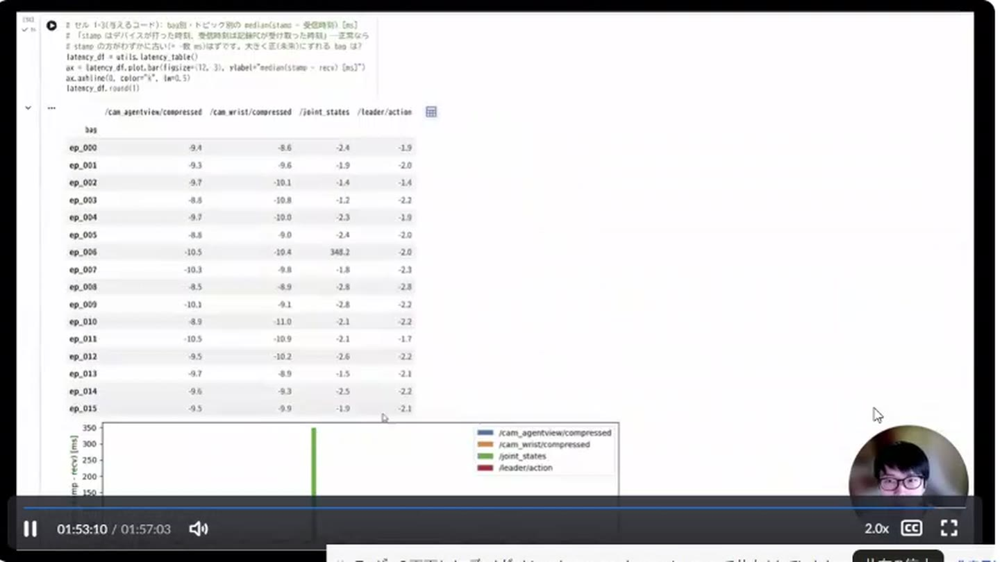
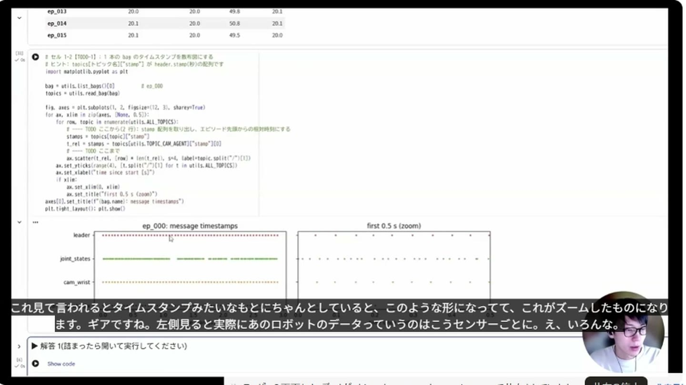
カメラ（agentview）のフレーム時刻を基準に、他トピックから slop 以内の最も近い時刻を拾う。 slop を超えたら None ＝ そのフレームは捨てる。関節は補間、ただし範囲外は捨てる。 ここで作られた対応が、そのまま学習データの (観測, 行動) ペアになります。
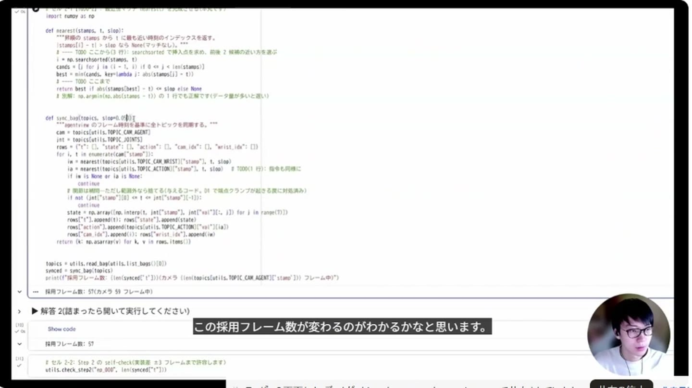
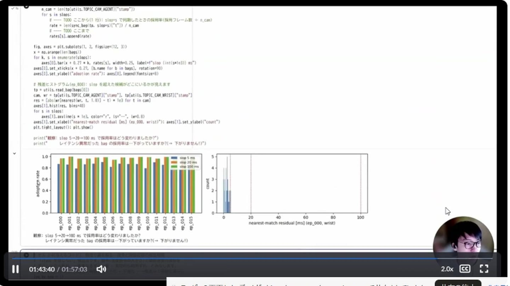
同期済みフレームを LeRobotDataset に変換して、あとから誰でも読める形にする。 finalize() の呼び忘れはメタデータが書かれず「壊れたデータセット」になる——公式 docs の Common Issues 筆頭です。
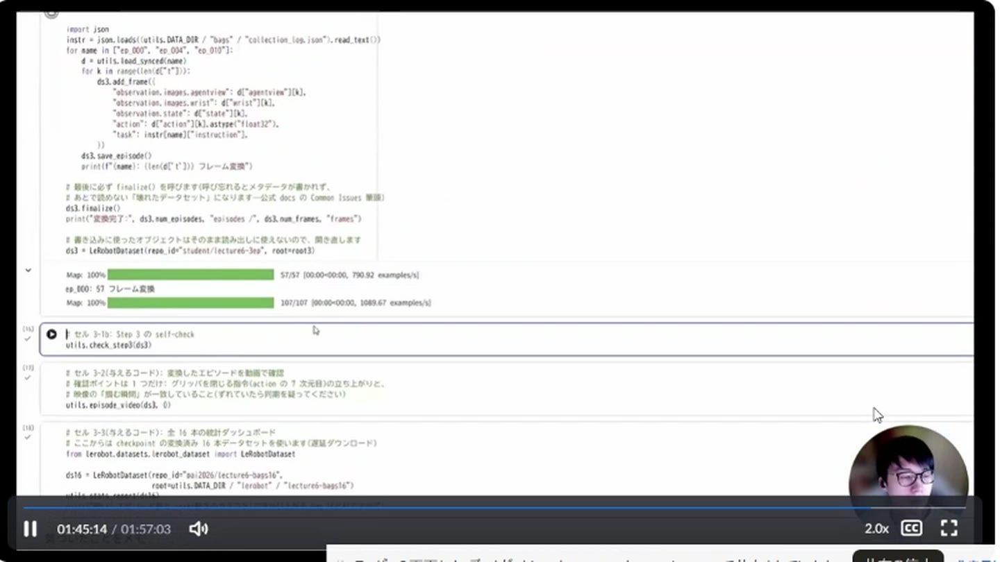
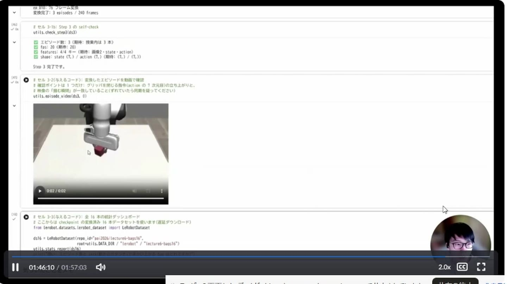
見つけた問題にどう対処するかを、エピソード単位で表に書く。 「成功しているけど下手」なテイクを keep するか filter するかに、一意の正解はありません。 根拠を書けることが評価軸——というのが演習の建て付けでした。
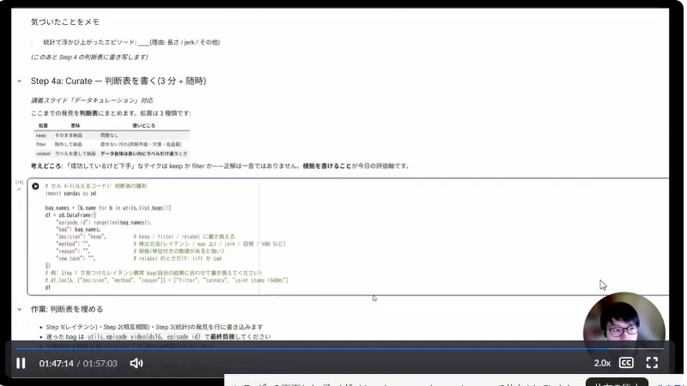
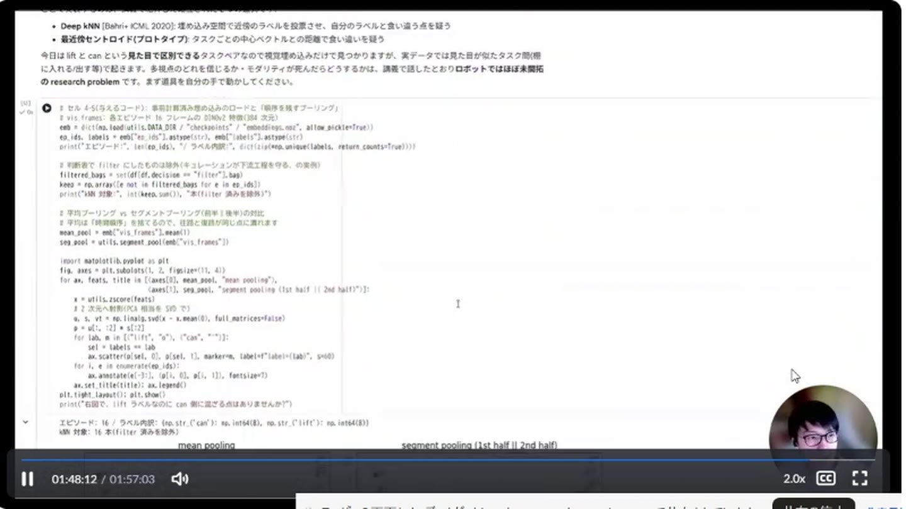
埋め込み空間で leave-one-out の kNN 多数決を取り、付与ラベルと予測が食い違うエピソードを「容疑者」として自動抽出。 出てきた2本を目視すると、映像は can のピック&プレースなのに指示文は lift ——ラベルの付け間違いでした。
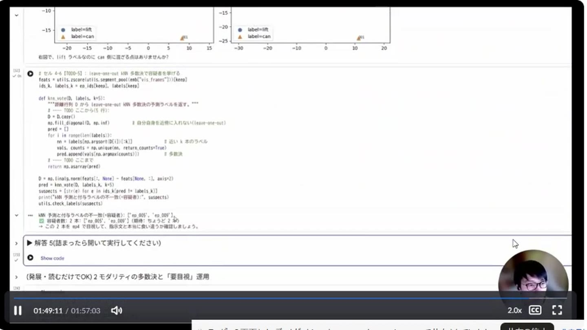
3つのチェックポイントは、方策も学習規模も同じ。違うのはデータだけ。 ②（同期修正・worse 100本込みで300本）が 0.88、③（さらに worse を除いて200本）が 0.54。 捨てた分だけデータ量とカバレッジが痩せた——講義で言う filter の副作用そのものです。
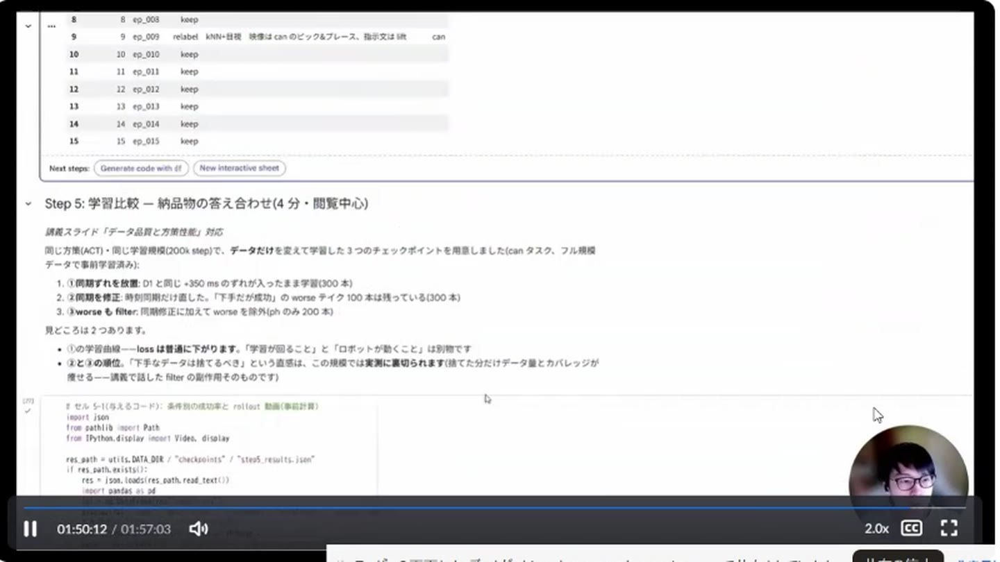
| 条件 | やったこと | 本数 | 成功率 |
|---|---|---|---|
| cond1_dirty | 同期ずれ（+350 ms）を放置 | 300 | 0.22 |
| cond2_sync | 時刻同期だけ修正（worse 込み） | 300 | 0.88 |
| cond3_curated | 同期修正＋worse を filter | 200 | 0.54 |
上から順に、効果の大きい順です。多くの場合、1〜3 を直すだけで成功率は跳ねます。
講義の締めに出された発展課題。最小構成なら T4 で1条件 10〜12分なので、 「データ品質 → 成功率」を自分の手で確かめられます。
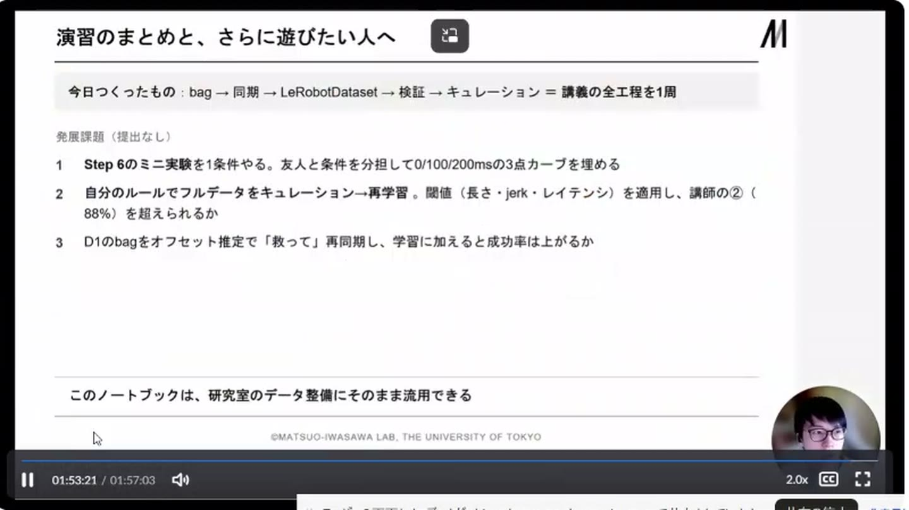